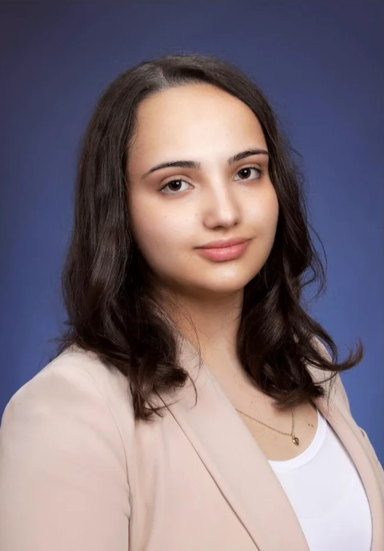

About me
Здраво!
Јас сум Ангела Колева, студент на ФИНКИ при универзитетот „Св. Кирил и Методиј“.
Студирам на насока СИИС (Софтверско инженерство и информациски системи) според програмата од 2018год.
Родена на 5 октомври 2003 во Неготино, одлучив мојата идна професија да биде во ИТ секторот,
па затоа го одбраф ФИНКИ бидејќи нуди многу знаење и можности за пракса и практична работа во тој сектор.